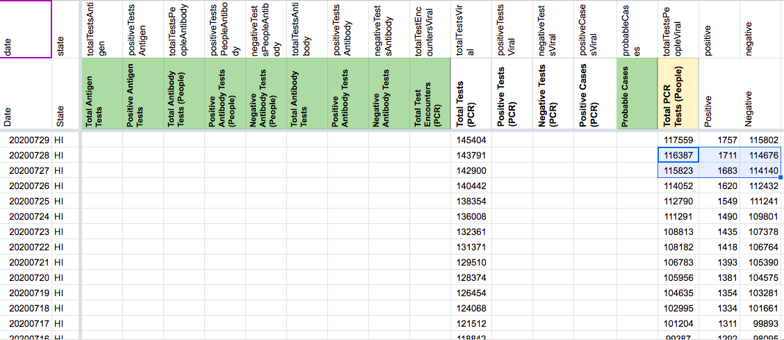
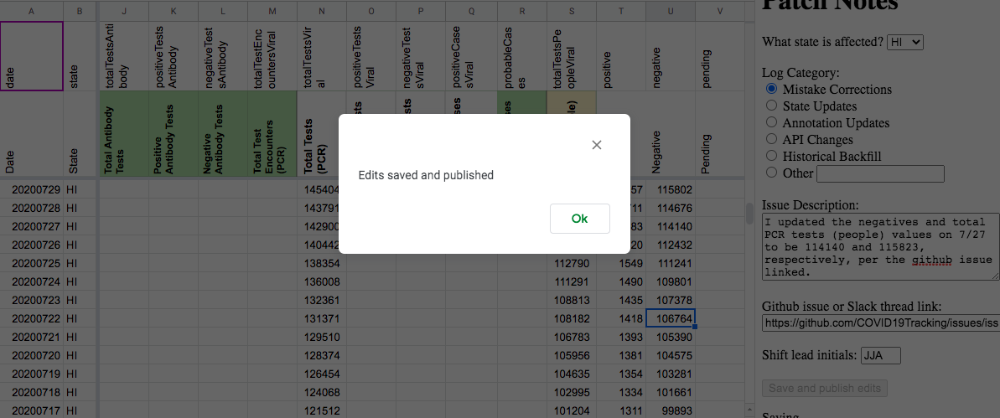
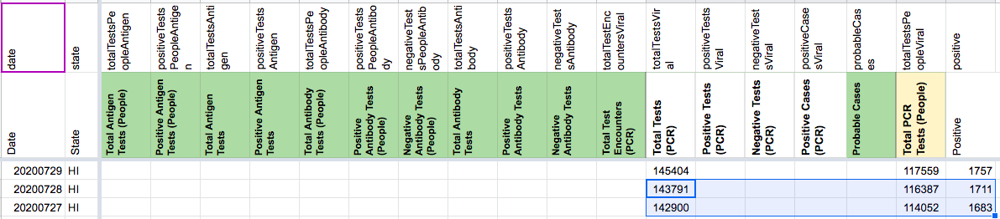

[HI] Test Data 7/27-28
Issue number 756
brianskli opened this issue on August 12, 2020 at 8:16 pm
Labels Historical Data stale
State or US: Hawaii
Describe the problem Suggested corrections to CTP’s numbers from Jul 27 and 28 for Negative Tests and Total Tests from HI user based on state data.
| Date | New Tests | Cases | Negative | Pending | Hospitalized | Deaths | Total |
|---|---|---|---|---|---|---|---|
| Tue Jul 28 | 564 | 1,711 | 114,676 | N/A | 165 | 26 | 116,387 |
| Mon Jul 27 | 1,771 | 1,683 | 114,140 | N/A | 163 | 26 | 115,823 |
Link to data source https://hawaiicovid19.com/ https://experience.arcgis.com/experience/eb56a98b71324152a918e72d3ccdfc20/
Comments
AFTER: 
SAVED: 
This issue has been automatically marked as stale because it has not had recent activity. It will be closed if no further activity occurs. Thank you for your contributions!
This issue has been closed because it was stale for 15 days, and there was no further activity on it for 10 days. You can feel free to re-open it if the issue is important, and label it as “not stale.”
BEFORE: 